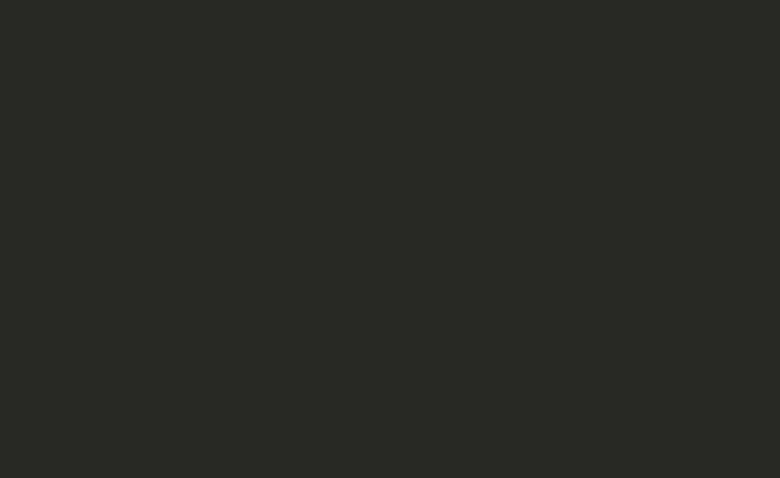

shinyglide is an R package which provides carousel-like or assistant-like components to shiny applications, thanks to the Glide JavaScript library.
It allows to create this sort of app (live example) :

Or can be integrated into an existing app to create an “assistant-like” interface (live example):

Features
- Responsive, navigation by mouse, keyboard, swiping
- Controls are completely customizable (live example)
-
Next and Back controls can be disabled until an input condition is met (same syntax as
shiny::conditionalPanel) - “Screens” can be generated or hidden depending on user inputs. Loading time are taken into accounts (disabled Next button and customizable animation)
- Integration with Shiny modal dialogs (live example)
- Multiple glides per app (live example)
Installation
You can install the stable version with :
install.packages("shinyglide")
And the development version with :
remotes::install_github("juba/shinyglide")
Usage
A shinyglide component is created with the glide() function. This component is then divided intro screens with the screen() function.
Here is the code of a very basic app (live example):
library(shiny)
library(shinyglide)
ui <- fixedPage(style = "max-width: 500px;",
titlePanel("Simple shinyglide app"),
glide(
height = "350px",
screen(
p("This is a very simple shinyglide application."),
p("Please click on Next to go to the next screen.")
),
screen(
p("Please choose a value."),
numericInput("n", "n", value = 10, min = 10)
),
screen(
p("And here is the result."),
plotOutput("plot")
)
)
)
server <- function(input, output, session) {
output$plot <- renderPlot({
hist(
rnorm(input$n),
main = paste("n =", input$n),
xlab = ""
)
})
}
shinyApp(ui, server)
For more information, see the three available vignettes :
Credits
-
shinyglideis based on the Glide JavaScript library, by Jędrzej Chałubek.